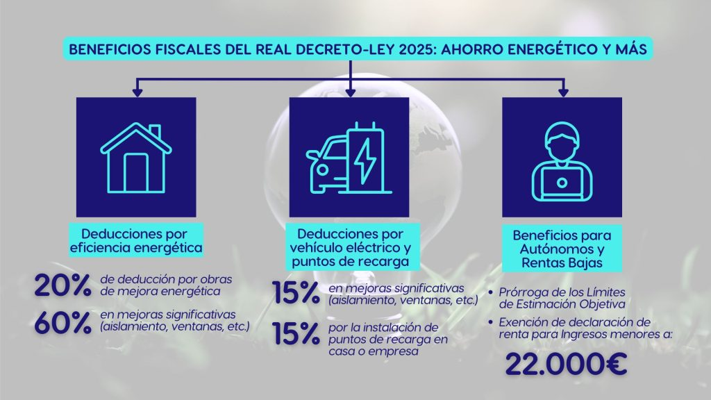

BIENVENIDOS A NUESTRO BLOG
¡Aquí podrás encontrar artículos, novedades y consejos relacionados con trámites, legalizaciones, asesoría fiscal-laboral-contable y mucho más!
El sector de las gestorías administrativas en España: Transformación digital en 2025
22 de enero de 2025
Introducción: En un constante evolución, el mundo de las gestorías administrativas en España atraviesa un proceso de digitalización acelerada...
1. Transformación digital: Más allá de la automatización. La digitalización ya no es una opción, sino una necesidad...
2. Ejemplo práctico: Gestoría Hellín con su conexión online a organismos oficiales y métodos telemáticos de recogida y envío de documentos...
Nuevos beneficios fiscales para autónomos en 2025
15 de enero de 2025
El Gobierno ha anunciado una serie de incentivos para trabajadores por cuenta propia... (texto del artículo)